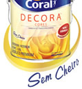
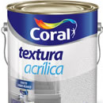
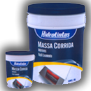
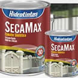
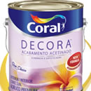
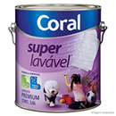
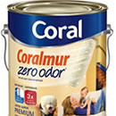
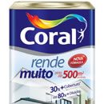
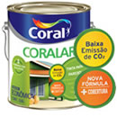
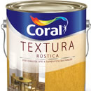

Tinta Decora - Cores
Mude sua casa com uma tinta que inspira a decorar com cores. Porque a cor da parede é um elemento de decoração muito importante para criar um ambiente com seu toque pessoal. Para ajudar, a Coral usa tecnologia internacional para o desenvolvimento de cores e você pode escolher entre as opções prontas do catálogo ou preparar na máquina uma das mais de duas mil cores do leque.

Textura Acrílica Branco
A Textura Acrílica é a maneira mais prática de se obter um efeito de textura em suas paredes, pois ela pode ser aplicada direta sobre o reboco e disfarça pequenas imperfeições da superfície. É de cor branca, mas você pode obter um efeito decorativo com outras cores, é só aplicar tinta de acabamento sobre a Textura.
Embalagem 30 Kg e 6 Kg: 4 - 7 m² / galão / demão.
Embalagem 30 Kg e 6 Kg: 4 - 7 m² / galão / demão.

Massa corrida Hidrotintas
Produto de alta qualidade, excelente poder de enchimento, aderência, cobertura, fácil lixamento e baixo odor. É cremosa e mais econômica.
Disponível com: 18L ou 3,6L
Disponível com: 18L ou 3,6L
 Tinta Demais
Hidro tintas empresa que trabalha com tinta a base de água, sem cheiro forte, e alívio para o bolso.
Tinta Demais
Hidro tintas empresa que trabalha com tinta a base de água, sem cheiro forte, e alívio para o bolso.
Diponível com: 18L ou 3,6L

Tinta Secamax
Indicada para pintura em superfícies de metal, alumínio, galvanizados, madeira e alvenaria em ambientes internos e externos, oferecendo um perfeito acabamento.
Diponível com: 900ML ou 3,6L
Diponível com: 900ML ou 3,6L

Decora Acabamento Acetinado
Lata 18 L: 200 a 300 m² por demão.
Galão 3,6 L: 40 a 60 m² por demão.
Quarto* 0,8 L: 9 a 14 m² por demão.
Galão 3,6 L: 40 a 60 m² por demão.
Quarto* 0,8 L: 9 a 14 m² por demão.

tinta acrílica super lavável acetinado
Tinta acrílica especialmente formulada para que você limpe facilmente manchas de café, chocolate etc. Para pintura de alvenaria, cerâmica não vitrificada, telhas, blocos de cimento entre outros.
Diponibilidade: 3,6L e 18L.
Diponibilidade: 3,6L e 18L.

Tinta acrílica coralmur
Três horas após a aplicação não deixa rastro de cheiro característico de pintura e ficou 3 vezes mais resistente. É indicado para paredes internas e externas. Disponibilidade: 3,6L e 18L.

Rende Muito Nova Fórmula
tinta de alta consistência que permite uma diluição superior aos produtos convencionais. Você consegue 80% de diluição com água, podendo pintar até 500 m² (lata) por demão.
Lata 18 Litros cor pronta: até 500m² por demão.
Galão 3,6 Litros cor pronta: até 100m² por demão.
Lata 18 Litros cor pronta: até 500m² por demão.
Galão 3,6 Litros cor pronta: até 100m² por demão.

Coralar Acrílico
Tinta acrílica para quem deseja economia com qualidade. É de fácil aplicação, rápida secagem, mínimo respingamento e oferece bom acabamento, além de ter ótima resistência e cobertura.
Lata 18 L: até 250 m² por demão.
Galão 3,6 L: até 50m2 por demão.
Lata 18 L: até 250 m² por demão.
Galão 3,6 L: até 50m2 por demão.

Textura Rústica Coral
Com Textura Rústica fica fácil deixar até a superfície da parede com seu toque pessoal, criando um efeito decorativo e sofisticado. O efeito mais comum é o arranhado, com riscos em baixo-relevo que dão a sensação de ambiente rústico. Porém, com ferramentas apropriadas e usando a sua imaginação, a Textura Rústica permite a obtenção de diversos outros efeitos, deixando o ambiente ainda mais personalizado.
Embalagem 33 Kg e 7 Kg: 2 - 3 m² / galão / demão.
Embalagem 33 Kg e 7 Kg: 2 - 3 m² / galão / demão.